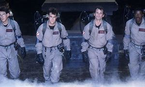
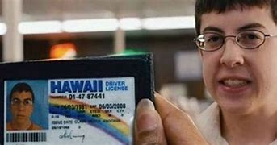
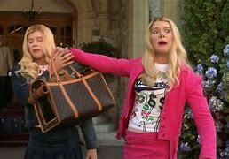

Caça FantasmasAcompanha três professores de ciência – Peter Venkman, Ray Stantz e Egon Spengler – que são expulsos de sua universidade em Nova York após a falta de credibilidade de suas pesquisas sobre o paranormal. Decididos a continuar seu trabalho, eles fundam uma empresa de captura de fantasmas chamada "Ghostbusters". Equipados com tecnologia inventiva, como armadilhas para fantasmas e mochilas de prótons, os Caça-Fantasmas começam a ganhar notoriedade ao ajudar os cidadãos da cidade a se livrar de assombrações e fenômenos sobrenaturais. À medida que a demanda por seus serviços aumenta, eles se deparam com uma poderosa entidade chamada Gozer, que ameaça a cidade com um plano para invadir o mundo. Enquanto lidam com os desafios de seus novos negócios, os Caça-Fantasmas também enfrentam problemas pessoais, incluindo o interesse romântico de Peter por Dana Barrett, uma cliente que se torna possuída por uma força maligna. |
SuperbadSuperbad gira em torno de dois amigos inseparáveis, Seth (Jonah Hill) e Evan (Michael Cera), que estão prestes a se formar no ensino médio. Com a formatura se aproximando, eles se sentem pressionados a fazer uma última grande festa antes de seguir caminhos diferentes na faculdade. Determinado a impressionar suas colegas de classe e conquistar a atenção de suas crushes, Becca (Martha MacIsaac) e Jules (Emma Stone), Seth e Evan decidem que precisam de bebidas para a festa. Para conseguir isso, eles contam com a ajuda de Fogell (Christopher Mintz-Plasse), um amigo excêntrico que se torna famoso ao criar uma identidade falsa de "McLovin" para comprar álcool. A noite rapidamente se transforma em uma série de desventuras hilárias, incluindo encontros desastrosos com policiais, mal-entendidos e situações embaraçosas. À medida que os eventos se desenrolam, Seth e Evan enfrentam suas inseguranças sobre a amizade, a transição para a vida adulta e o que significa crescer. |
A Mentira"A mentira" Olive Penderghast, uma estudante do ensino médio que leva uma vida relativamente tranquila até que um pequeno ato de desonestidade a coloca no centro das atenções. Após inventar uma mentira inofensiva sobre ter perdido a virgindade, ela se vê envolvida em uma série de boatos que se espalham rapidamente pela escola. A mentira a transforma em uma espécie de paródia de uma figura promíscua, e, ao invés de tentar corrigir a situação, Olive decide abraçar seu novo status. Ela começa a ajudar colegas que também desejam criar uma imagem mais ousada, oferecendo a eles "falsas relações" que a fazem parecer ainda mais envolvida em sua vida de mentira. O filme explora os altos e baixos da vida escolar, a pressão social e as questões de identidade. À medida que a história se desenrola, Olive deve confrontar a verdade sobre si mesma e aprender a lidar com as consequências de suas mentiras. |
As BranquelasIrmãos Kevin e Marcus Copeland, dois agentes do FBI que se especializam em disfarces e investigações. Após uma operação que dá errado, eles são encarregados de proteger duas herdeiras ricas, Brittany e Tiffany Wilson, que são as principais testemunhas em um caso de sequestro. Quando um acidente deixa as irmãs com ferimentos que as impedem de aparecer em público, decidem se disfarçar como as herdeiras usando maquiagem, perucas e trajes de luxo. A transformação resulta em um humor exagerado e muitas situações embaraçosas, enquanto eles tentam se passar por mulheres brancas da alta sociedade. Enquanto tentam manter a farsa, Kevin e Marcus se veem envolvidos em um mundo de festas glamourosas, rivalidades sociais e situações cômicas. A comédia explora temas de identidade, preconceito e estereótipos, tudo isso em meio a uma série de mal-entendidos e eventos hilários. Os irmãos enfrentam questões pessoais sobre aceitação e autoimagem. |
|---|